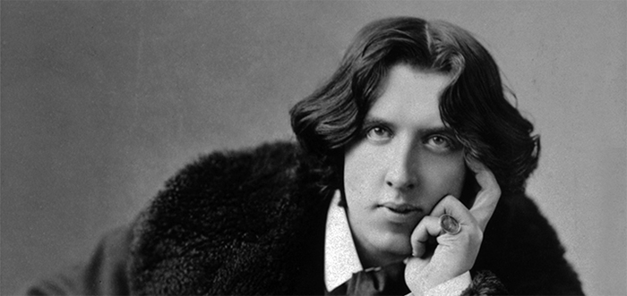

Oscar Wilde w anegdotach
Książka Oscar Wilde o sztuce i życiu jest próbą przybliżenia refleksji Wilde’a o sztuce i życiu, ukazania ich aktualności, głębi, uniwersalnej wartości.
W pierwszej części zostały wybrane i uporządkowane tematycznie jego wypowiedzi na temat sztuki i życia (podano je w języku angielskim i polskim tłumaczeniu). Część druga to omówienie problematyki zawartej w tych sądach. Appendix zawiera m.in. szczegółowe kalendarium, informacje dotyczące adaptacji utworów oraz opinie znanych postaci odnoszące się do Wilde’a bądź jego twórczości.
Kontakt i zamówienia: mywildbook@gmail.com

Wydawnictwo: WILDBOOK
Rok wydania: 2010
Oprawa: twarda
Format: 205 × 145
Liczba stron: 224
Cena: 42 zł
ISBN: 978-83-930701-0-7
O ANGLII I AMERYCE

Oscar Wilde (1882), fot. Napoleon Sarony, źródło: Wikimedia Commons (modyfikacja własna)
„Anglicy mają bardzo wiele wspólnego z Amerykanami, z wyjątkiem języka”.

Niejednokrotnie źle wyrażał się o Anglii i Anglikach. Pisał między innymi: „Artysta, który stworzy w Anglii dzieło uznane za zrozumiałe i moralne, musi się poważnie zastanowić, czy nie jest to dzieło podrzędnego gatunku, pozbawione wartości artystycznej”.
Kąśliwe uwagi o Anglii i Ameryce łączył z zachwytem Francją i Paryżem. „Francja ma tę wyższość nad Anglią – twierdził – że we Francji każdy bourgeois chce być artystą, podczas gdy w Anglii każdy artysta chce być bourgeois”. A swoje wrażenia z pobytu w Ameryce podsumował słowami: „Dobrzy Amerykanie idą po śmierci do Paryża, źli Amerykanie – do Ameryki”.
Po wyjściu z więzienia rozmawiał z Charlesem Rickettsem, który był ilustratorem jego utworów, o wydaniu Portretu pana W.H. „Wiem, że wymaga pewnego retuszu, chociaż jest to jedno z moich wczesnych arcydzieł”. Ricketts zasugerował, że lepiej wydać inną jego książkę. „Tak, może masz rację... wydać Portret pana W.H. byłoby raczej nieroztropnie... publiczność angielska musiałaby najpierw przeczytać sonety Szekspira”..
W kwietniu 1900 roku przebywał w Rzymie. Dowiedział się, że Ogrody Watykańskie są otwarte dla pielgrzymów z Czech i Portugalii. „Od razu zacząłem mówić płynnie obu językami – pisał w liście do Roberta Rossa – wytłumaczyłem, że angielskie ubranie (ubieram się jak Anglik) to pewna forma pokuty”. Pozwolono mu wejść.
Jego wrażenia po przyjeździe do Ameryki nie były zbyt optymistyczne. „Wszyscy zdają się spieszyć na pociąg. To nie sprzyja poezji ani romantyczności” – zauważył.
Był zawiedziony, że w Ameryce „większość narodowych wytworów zdaje się być importowana z zagranicy”.
Ubolewał, że w Ameryce nie zobaczył tego, czego się spodziewał: oryginalnie ubranych ludzi, widowisk, pochodów. „Widziałem tylko dwa pochody: jeden straży ogniowej z ochroną policji, drugi – policji z ochroną straży ogniowej”.
Podczas podróży po Ameryce zapytał jednego z dziennikarzy, ile mu zapłacono za artykuł, w którym wypisywał głupstwa na jego temat. „Sześć dolarów” – padła odpowiedź. „No cóż – odparł Wilde – cena kłamstwa w Ameryce nie jest zbyt wysoka”.
Na jednym z odczytów w Bostonie studenci Harwardu, chcąc go ośmieszyć, ubrali się w spodnie do kolan i do stroju dołączyli słoneczniki bądź lilie. Komentarz Wilde’a był miażdżący. „Witam Panów jako absolwent uniwersytetu w Oksfordzie” – rozpoczął. „Karykatura jest daniną, którą miernoty płacą geniuszom” – kontynuował. I dobił ich słowami: „Zmuszony jestem po raz pierwszy w życiu wypowiedzieć gorącą modlitwę: wybaw mnie od moich prozelitów”.
Kiedy kolejny raz amerykańscy dziennikarze zadawali mu mnóstwo głupich pytań, odpowiedział: „Nie mam pojęcia, o co wam chodzi. Przyjechałem do Ameryki, aby wygłaszać odczyty o sztuce, nie po to, by leczyć reumatyzm lub dawać przepisy na porost włosów”.
Gazety amerykańskie określił jako „komiczne, ale wcale niezabawne”. Ich wartość widział jedynie w tym, że „zapewniają stałe zajęcie niejednej istocie splamionej atramentem”.
Cincinnati nie wzbudziło jego zachwytu. Jednemu z tamtejszych dziennikarzy powiedział: „Że też wasi przestępcy nie powołują się na brzydotę waszego miasta jako wytłumaczenie popełnionych zbrodni”.
Po przybyciu do Saint Louis oświadczył: „Kilku obywateli Saint Louis powiedziało mi, że miasto nie wygląda zbyt dobrze. Nawet gdyby mnie o tym nie poinformowano, sam bym to zauważył”.
W San Francisco wyraził w sposób symboliczny opinię o Ameryce. Wspominał, że w dzielnicy chińskiej widział wielkiego chińskiego robotnika, który pił herbatę z małej porcelanowej filiżanki, a „we wszystkich wspaniałych hotelach w tym kraju, gdzie tysiące dolarów roztrwoniono na lustra w złoconych ramach i lśniące kolumny, podawano mi kawę albo czekoladę w filiżankach grubych na pół cala”.
W jednym ze swoich odczytów wygłaszanych w Ameryce zwrócił uwagę, że należy wieszać obrazy na linii oczu, zaskoczyło go bowiem umieszczanie ich pod samym sufitem. Po powrocie do Anglii zweryfikował swoją opinię: „kiedy zobaczyłem, jak brzydkie są te obrazy, zrozumiałem, że zwyczaj ten ma swoje dobre strony”.
Wielokrotnie wskazywał na bardzo niski poziom wykształcenia humanistycznego większości Amerykanów. Przykładowo: „Wiedza o sztuce na zachód od Gór Skalistych była tak znikoma, że pewien jej mecenas, który był kiedyś górnikiem, oskarżył przedsiębiorstwo kolejowe o straty, ponieważ odlew gipsowy Wenus z Milo, który sprowadził z Paryża, został mu dostarczony bez rąk. I – co jeszcze bardziej zdumiewające – wygrał sprawę i otrzymał odszkodowanie”.
Dziennikarze w Ameryce spytali go, dlaczego wszędzie nosi ze sobą futro. „Żeby zasłaniać ohydne kanapy we wszystkich pokojach hotelowych” – odparł.
Poinformowano Wilde’a, że przyjazd do Leadville jest zbyt niebezpieczny, często tu strzelają i powinien zmienić plany, gdyż on lub jego impresario mogą stracić życie. Odpisał: „Nic, cokolwiek mogą zrobić mojemu impresario, nie zdoła mnie zastraszyć”. I wyruszył w Góry Skaliste.
Za jedynych dobrze ubranych mężczyzn w Ameryce uznał górników na Dzikim Zachodzie. „Patrząc na nich, myślałem z żalem o chwili, kiedy ci malowniczo ubrani ludzie wzbogacą się i pojadą na Wschód, gdzie przywdzieją okropne, współczesne, modne stroje”.
W Górach Skalistych miał odczyt dla górników. Gdy przedstawił im fragmenty z autobiografii Benvenuta Celliniego byli zachwyceni. Robili mu wymówki, że go z sobą nie przywiózł. Kiedy powiedział, że Cellini nie żyje, chóralnie zapytali: „A kto go zastrzelił?”
Kiedy opowiadał o swojej podróży po Dzikim Zachodzie, zrobił kolejną kąśliwą aluzję pod adresem współczesnej mu krytyki artystycznej. Właśnie tam – jak stwierdził – „zobaczyłem jedyną racjonalną metodę krytyki artystycznej, z jaką się kiedykolwiek w życiu spotkałem. Nad fortepianem wisiał napis: Proszę nie strzelać do pianisty: gra najlepiej, jak potrafi”.
Po jednym z odczytów w Leadville zjechał do kopalni srebra, gdzie górnicy zaprosili go na kolację. „Na pierwsze danie była whisky, na drugie whisky i na trzecie whisky” – wspominał. Zdumienie i zachwyt górników wywołał fakt, jak dobrze Wilde radził sobie z tą kolacją. Poprosili go, aby dokonał otwarcia nowej żyły kruszcu srebrnym świdrem i nazwali ją Oscar. „Miałem nadzieję – podsumował z żalem to zdarzenie – że z cechującą ich wspaniałą prostotą ofiarują mi udziały Oscara, ale w sposób bezpretensjonalny tego nie zrobili”.
„W Leadville uświadomiłem sobie, że całe to błyszczące srebro, które na moich oczach wydobywano z kopalni, zostanie przekute na brzydkie dolary. Zrobiło mi się smutno”.
Z Griggsville otrzymał telegram z pytaniem, czy zgodzi się u nich wygłosić odczyt o estetyce. Odpowiedział: „Przede wszystkim zmieńcie nazwę swojego miasta”.
Kiedy był w Ameryce, do Nowego Jorku przybyła jego bliska znajoma – aktorka Lily Langtry, której często tu towarzyszył. Jedna z amerykańskich gazet napisała, że to właśnie Wilde ją odkrył. „Wolałbym odkryć panią Langtry niż odkryć Amerykę” – skomentował.
Pewnego dnia Wilde dowiedział się, że Dante Gabriel Rossetti dał poecie, który nagminnie wyłudzał od niego pieniądze, taką sumę, by mógł wyjechać do Ameryki. „Oczywiście, gdyby człowiek miał pieniądze na podróż do Ameryki, nigdy by tam nie pojechał” – skomentował Wilde.